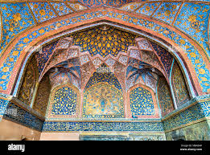
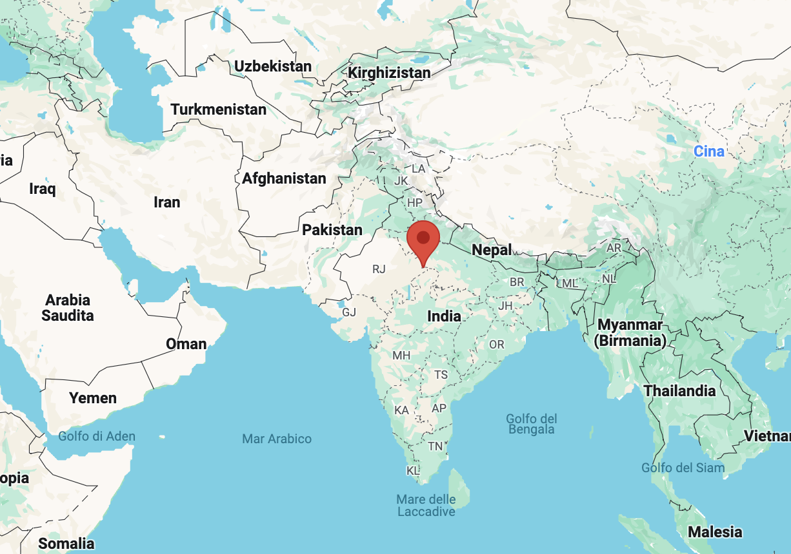

|  |
Sikandra(Mausoleo di Akbar) |
 |
|---|---|---|
Book your Stay |
Il Mausoleo di Akbar, situato a Sikandra, è un imponente monumento dedicato all'imperatore Mughal Akbar il Grande. Costruito nel XVII secolo, il mausoleo è un esempio notevole di architettura Mughal, combinando elementi hindu, islamici, cristiani e buddhisti. Circondato da vasti giardini, il sito riflette la grandezza e l'eclettismo di Akbar. Visitare Sikandra offre un'immersione nella storia e nell'arte Mughal, celebrando uno dei più grandi sovrani dell'India. |